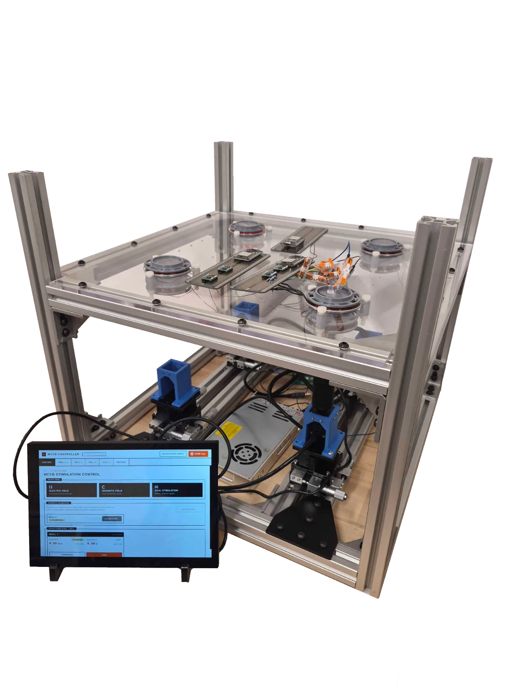
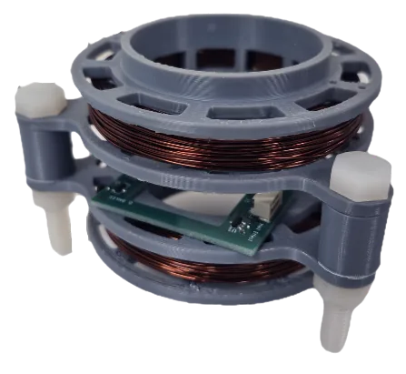
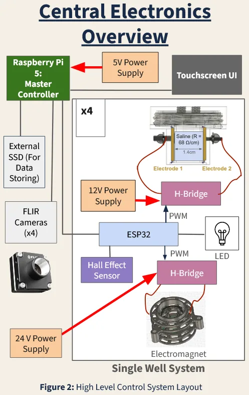
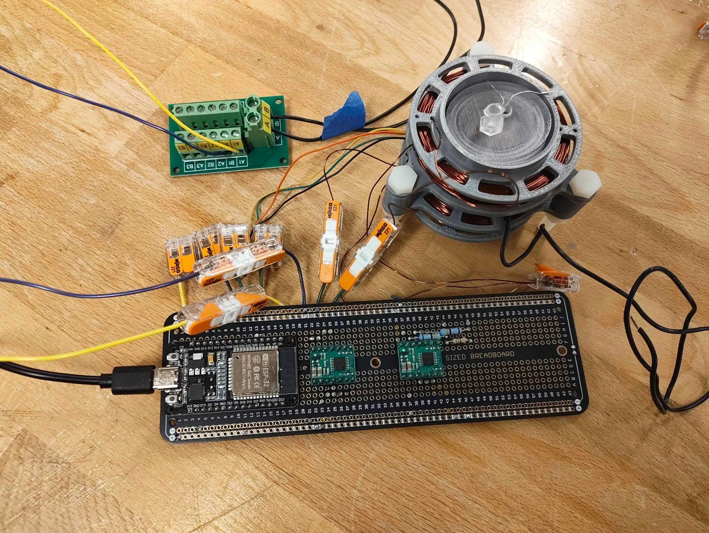
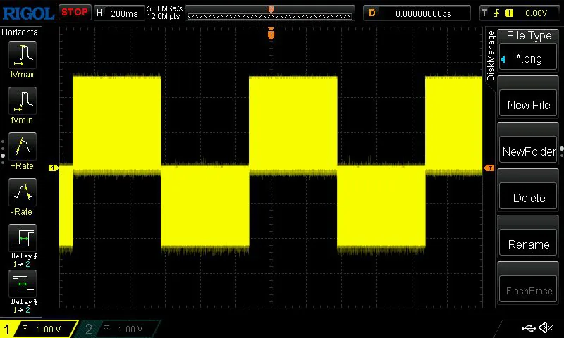
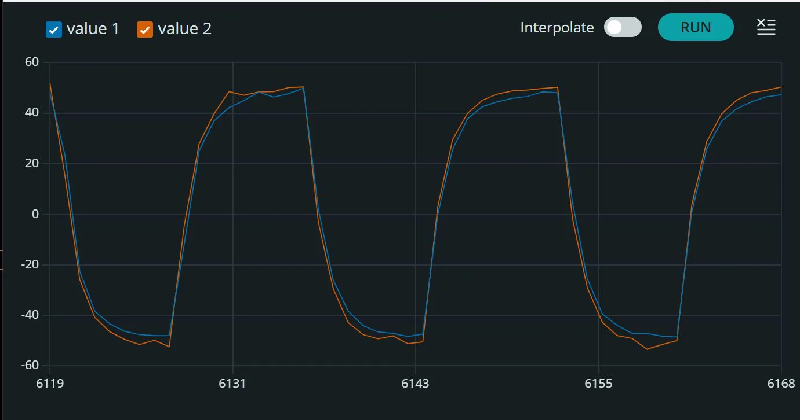
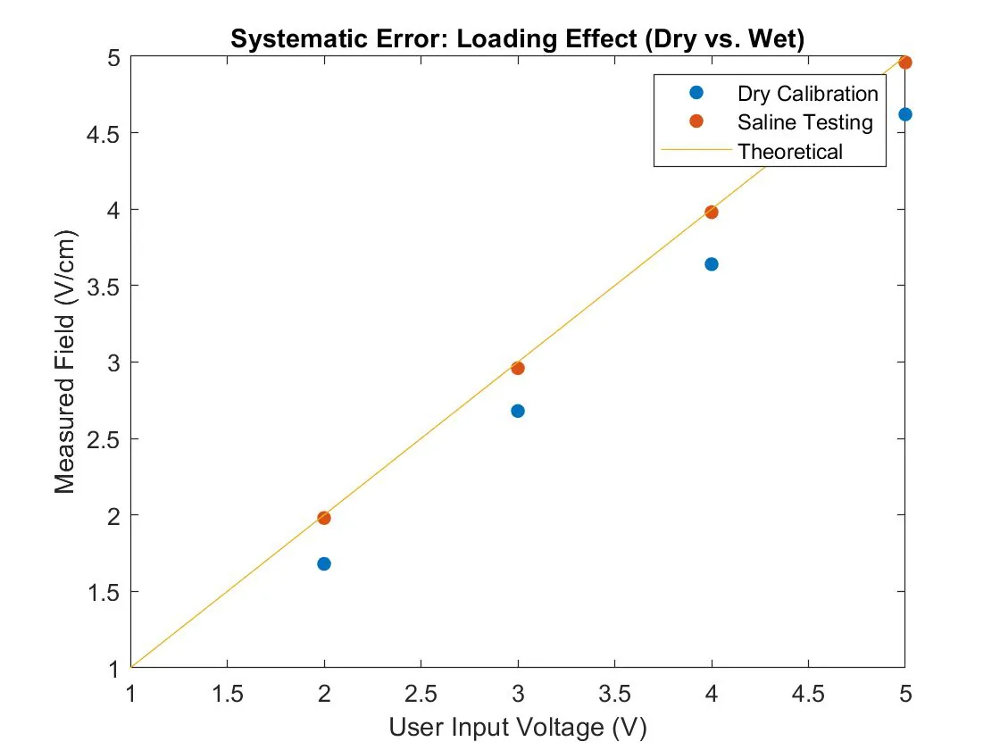
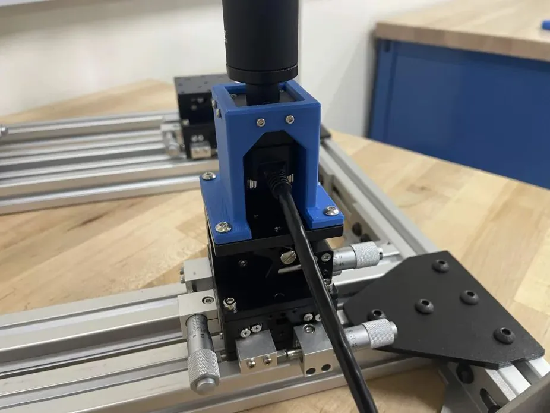
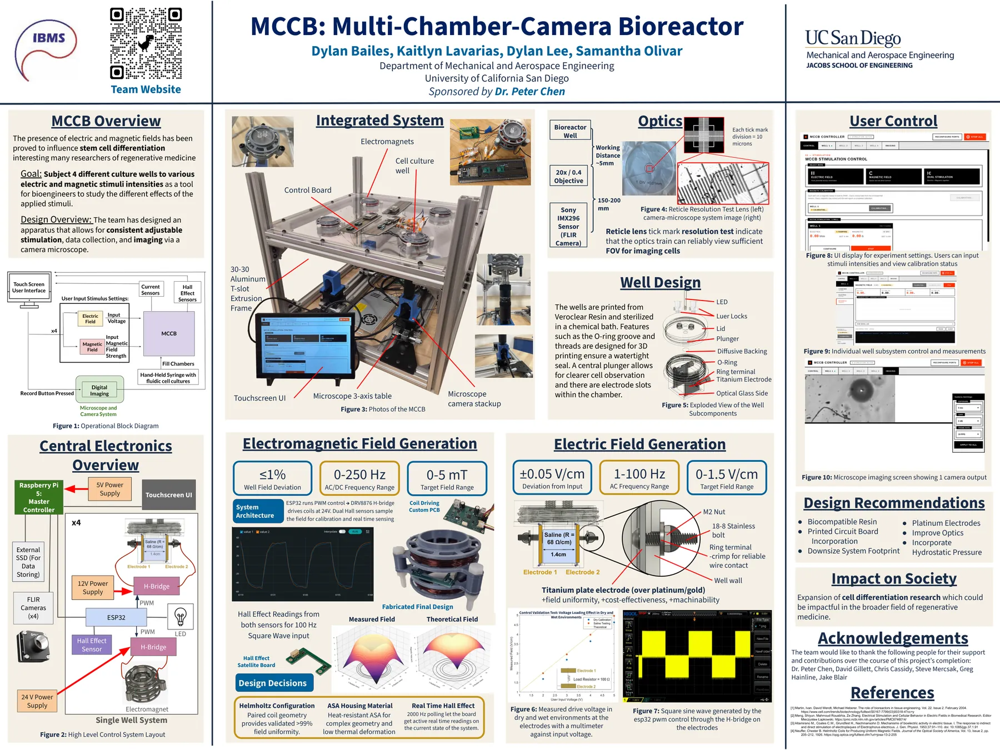

MCCB: Multi-Chamber-Camera Bioreactor
A four-well research platform that applies programmable electric and magnetic fields to stem cells while they are imaged under a microscope, built for research into stem cell differentiation and regenerative medicine.
- Sponsor
- Dr. Peter Chen, UC San Diego
- Course
- MAE 156A/B Senior Design
- My scope
- Chassis, H-bridge drive boards, ESP32 waveform firmware, electrode validation
- Team
- Dylan Bailes, Kaitlyn Lavarias, Dylan Lee, Samantha Olivar


Wells, each with its own coil pair, electrodes, and drive channels.
Magnetic field, 0–250 Hz AC or DC, with at most 1% deviation across the well.
Electric field, 1–100 Hz AC, within ±0.05 V/cm of the input.
Liquid loss in leak testing; 0.46 psi drop from 10 psi over 10 minutes.
How it works

A Raspberry Pi 5 touchscreen sets the stimulus for each well and records from four FLIR cameras. Each well has its own ESP32, which drives two H-bridges: one feeds the Helmholtz coil pair from a 24 V supply, and the other feeds a pair of titanium plate electrodes from 12 V.
Dual Hall sensors sit in the uniform-field region between the coils and report the field back for calibration and live readings.
The wells are printed in VeroClear resin with an O-ring-sealed threaded lid and a cover-glass floor, so a 20×/0.4 objective and a Sony IMX296 camera can image the cells from below.
What I worked on
Drive electronics
The team’s custom driver PCBs failed, so I routed and hand-soldered perfboard H-bridge modules for the electrode and electromagnet channels. The final integrated system ran on these boards.

Waveform firmware
I wrote the ESP32 firmware that generates the stimulus waveforms. It drives the H-bridges with 20 kHz PWM, and an analog low-pass filter smooths the output into sine, square, triangle, and step waveforms: 0.1–250 Hz on the coils and 0.1–100 Hz on the electrodes.
A serial command sets the mode, amplitude, and frequency of each channel. The firmware also auto-zeros both Hall sensors and streams their readings at 2 kHz.


Electrodes
I compared titanium, platinum, and gold plate electrodes on a weighted scoring matrix. Titanium won at about $0.03/g, against $70/g for platinum and $145/g for gold.
I validated the electrode drive with a dry test using an INA219 current sensor, a multimeter, and a load resistor matched to saline across the 1.4 cm electrode gap (68 Ω/cm × 1.4 cm ≈ 95 Ω), then repeated it in saline. The delivered field stayed within ±0.05 V/cm of the input.

Chassis and microscope positioning
I designed and fabricated the chassis on a 3030 T-slot aluminum frame, with a 3/8 in (9.525 mm) acetal mounting plate chosen over aluminum and 316 stainless steel to avoid eddy currents near the coils. I also fabricated the motor mounts and microscope platform.
In 156A I wrote the component analysis for a motorized X-Y gantry to move microscopes under the wells. The requirements were under 100 µm per step (a target embryo is about 700 µm), holding position for 7 days against about 300 N of bumps and table vibration, and staying under 55 dB at 45 cm.
| Linear-motion option | Resolution | Holding force | Est. cost | Result |
|---|---|---|---|---|
| Leadscrew + linear rails NEMA 17 · 3/8″-16 Acme | 3.97 µm/step | ~675 N | $497 | Met every requirementSelected |
| GT2 belt, 16T pulley | 80 µm/step | ~90 N | $406 | Too little holding force |
| Actuonix P16-P linear actuator | ~300 µm | 500 N | $546 | 3× too coarse; 62 dB, over the 55 dB limit |
When the sponsor later asked for each microscope to move independently, the custom stage became too complex, so I switched the design to off-the-shelf XYZ stages (±6.5 mm in X/Y, 10 mm in Z, 0.01 mm steps) with a 3D-printed camera mount.
During risk reduction I also prototyped a machined Delrin screw-top well with a printed TPU gasket. UV-cure adhesive would not bond to Delrin, the coverslip seal failed, and the printed gasket leaked. Those results moved the team to O-ring-sealed VeroClear wells.
On the project side, I kept the Gantt chart and the $3,600 budget, wrote progress reports, and authored the applicable-standards section (IEC 61010-1, ISO 10993-1, ISO 14971) and bill of materials for the final report.

Poster
